Subject 4 - Sleep Quality Analysis
📊 Overview Analysis
Baseline vs Sessions Comparison
Comparison of key metrics across all sleep sessions
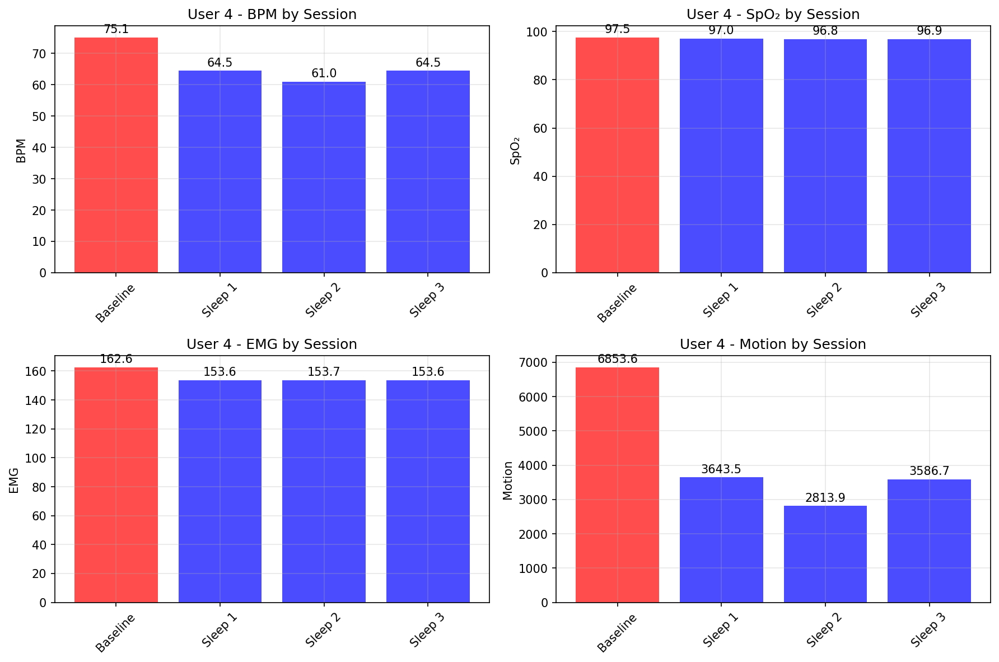Heart Rate Variability (HRV) Trend
HRV changes across sessions - indicator of autonomic nervous system balance
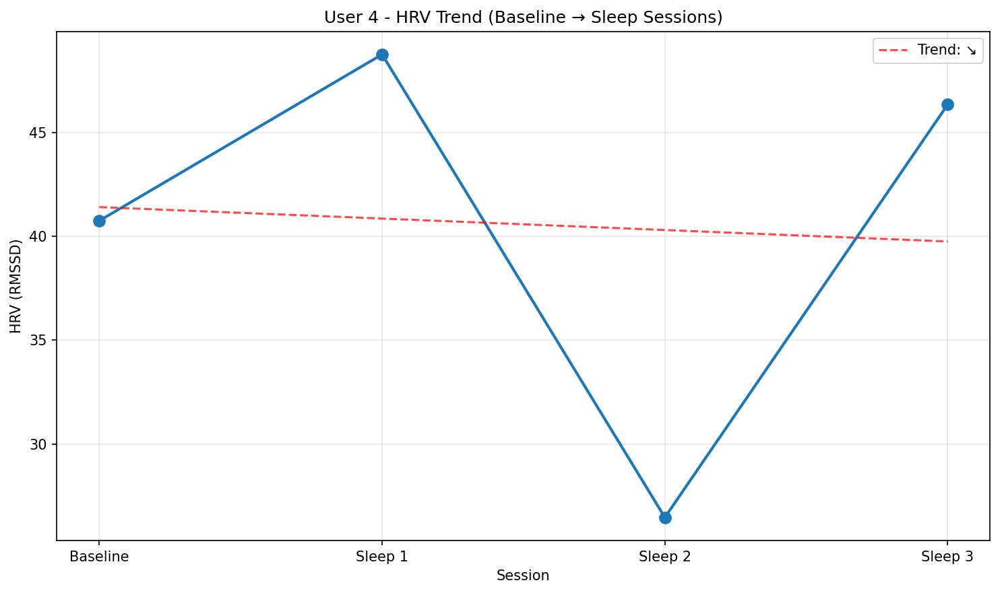Raw Biometric Time Series
ECG, SpO2, EMG, and motion data over time
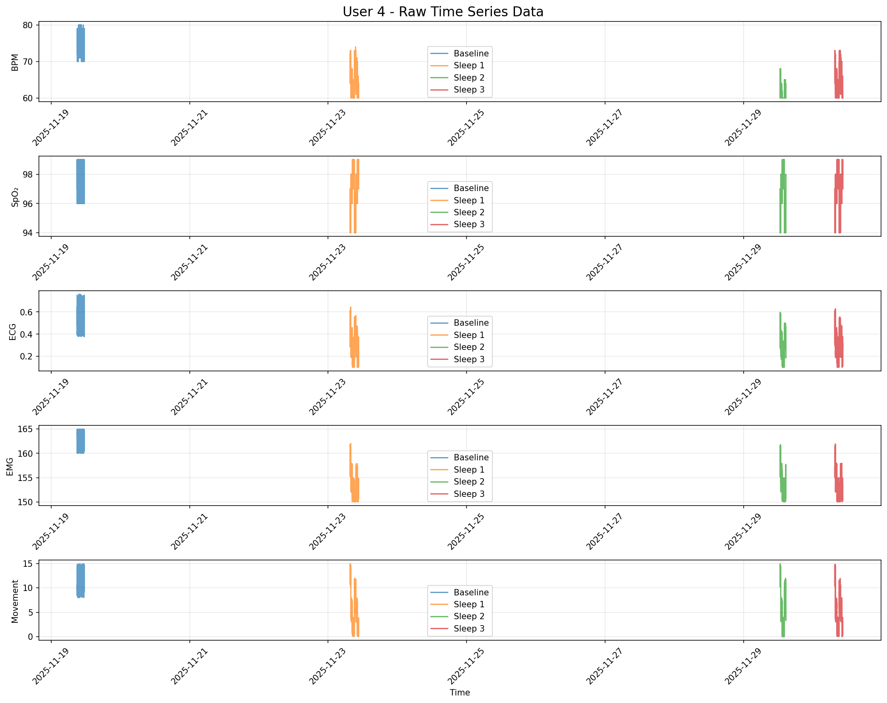Signal Distribution Analysis
Statistical distribution of biometric signals
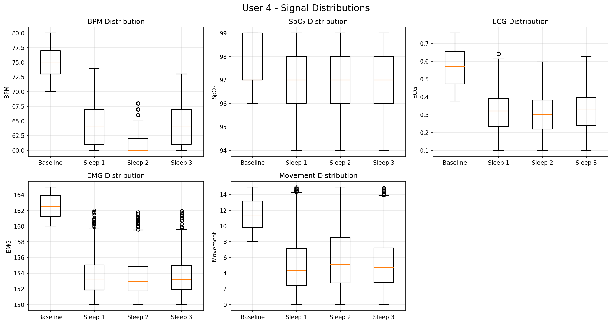Correlation Heatmap
Relationships between different biometric measurements
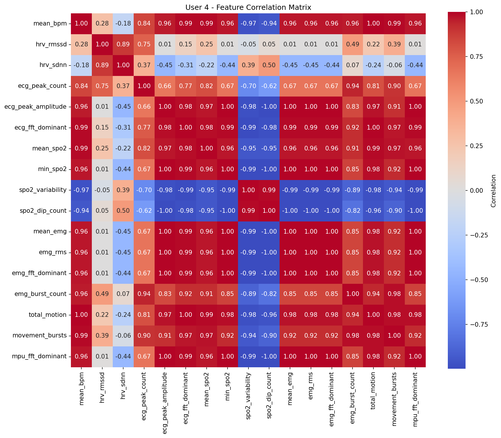🔬 Frequency Domain Analysis (FFT)
Baseline (Session 0)
ECG Frequency Analysis
Heart rhythm frequency components during baseline measurement
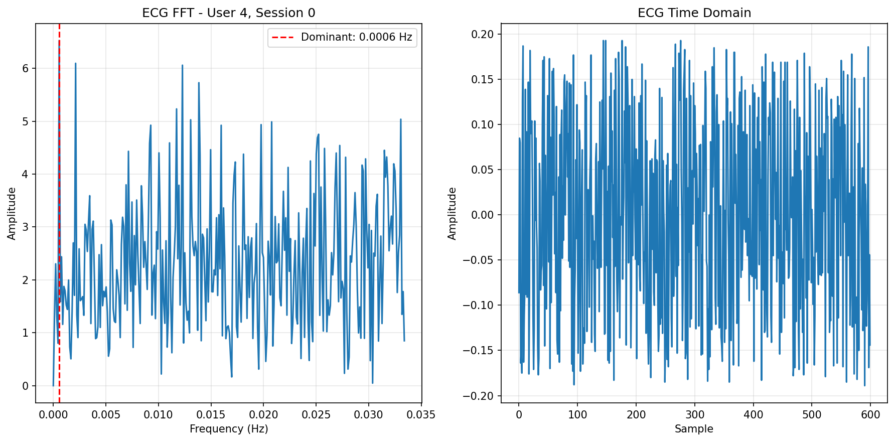EMG Frequency Analysis
Muscle activity frequency spectrum during baseline
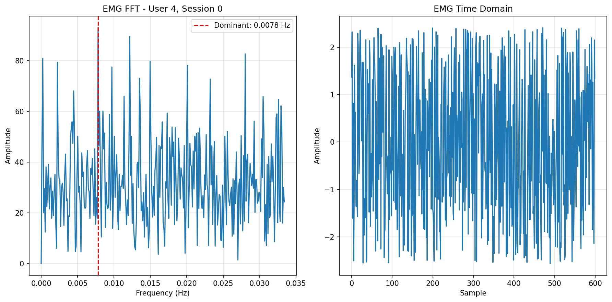Motion (MPU) Frequency Analysis
Movement pattern frequencies during baseline
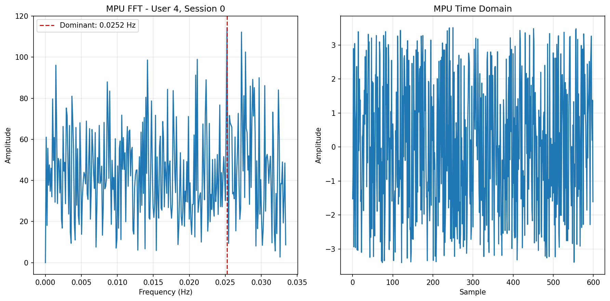Nap Session 1
ECG Frequency Analysis
Heart rhythm frequency components during sleep nap 1
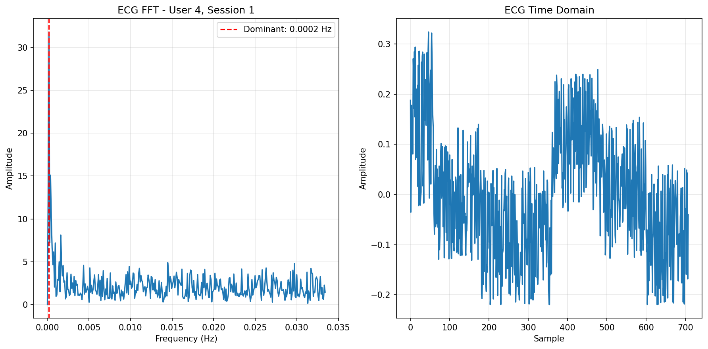EMG Frequency Analysis
Muscle activity frequency spectrum during sleep nap 1
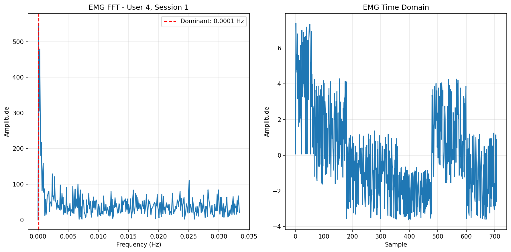Motion (MPU) Frequency Analysis
Movement pattern frequencies during sleep nap 1
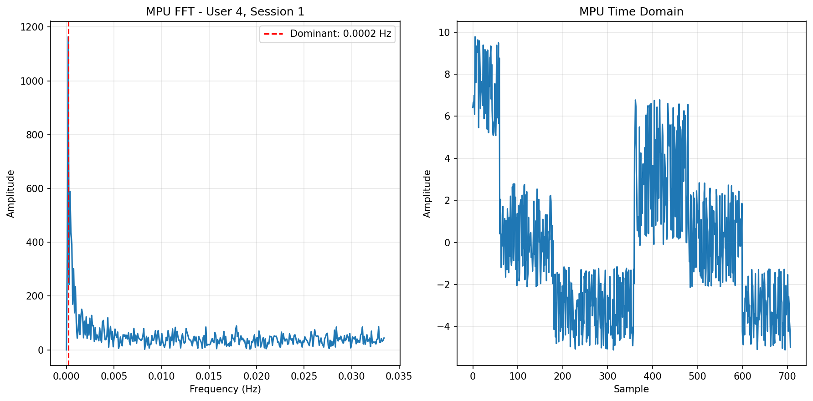Nap Session 2
ECG Frequency Analysis
Heart rhythm frequency components during sleep nap 2
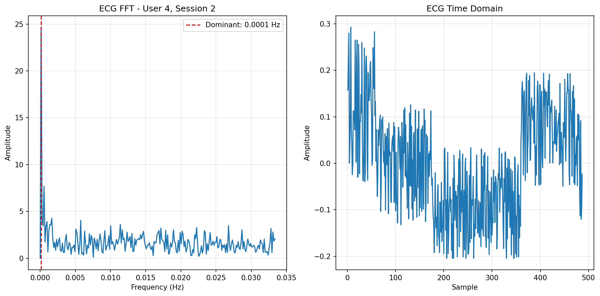EMG Frequency Analysis
Muscle activity frequency spectrum during sleep nap 2
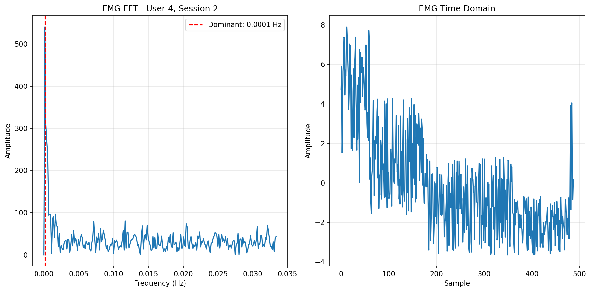Motion (MPU) Frequency Analysis
Movement pattern frequencies during sleep nap 2
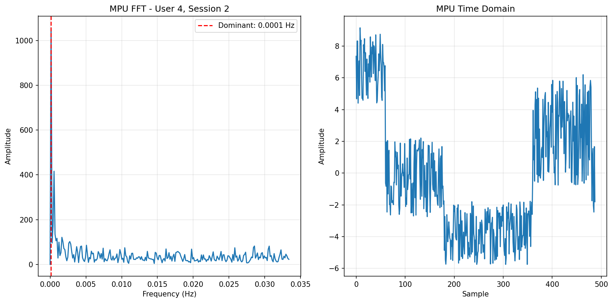Nap Session 3
ECG Frequency Analysis
Heart rhythm frequency components during sleep nap 3
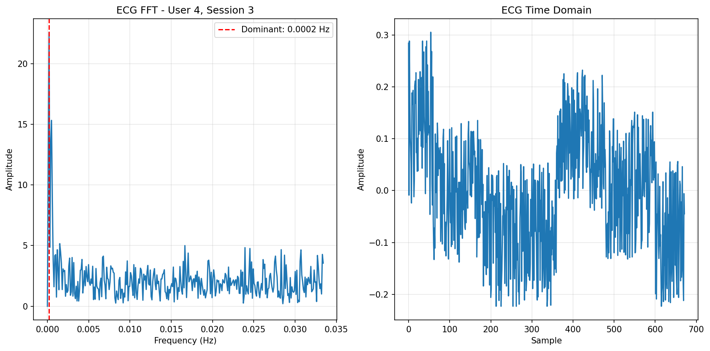EMG Frequency Analysis
Muscle activity frequency spectrum during sleep nap 3
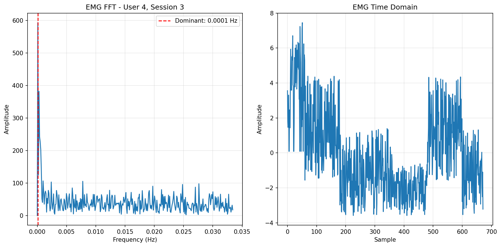Motion (MPU) Frequency Analysis
Movement pattern frequencies during sleep nap 3
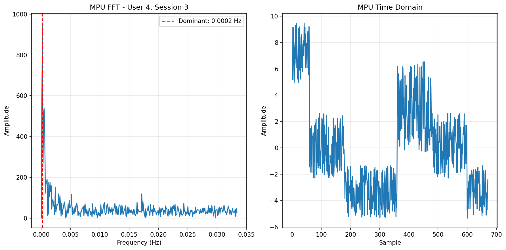